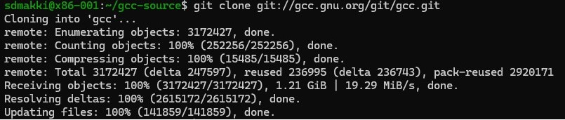
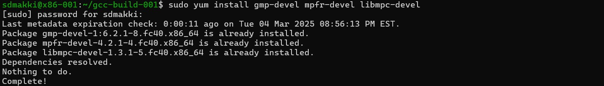
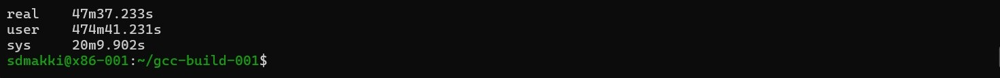
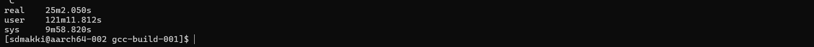
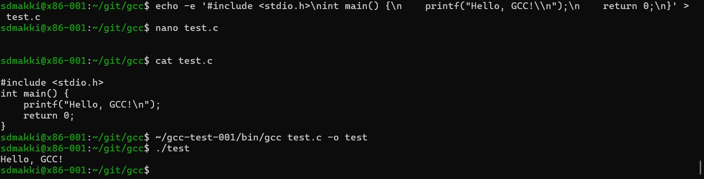

Published on: March 5, 2025
hey tech enthusiasts! In this lab we tried something new. In lab 4 was challenge to build the latest development version of the GNU Compiler Collection (GCC) from the source on two SPO600 servers: X86-001(running an x86_64 architecture) and aarch64-002 (running AArch64). GCC is an open source development, compiling everything from the Linux server. in the following I had to clone GCC’s source, configure and build it to prove it works and make experiments with rebuilding it also make sure to track the time. it’s a part of nderstanding how compilers trully work and how build systems optimize across architectures. This blog covers my journey the essential result, and what I’ve learned by experimenting with this codebase on both servers.
firstly, at this lab I counter many linking-errors, failed install and a broken test file. So I deleted everything including the old directories on both server, and I stared fresh by executing the following:
rm -rf ~/gcc-build-001 ~/gcc-test-001 ~/git
• gcc-build-001: My build directory.
• gcc-test-001: Where GCC would install.
• git: kept the cloned GCC repository (~/git/gcc).
after, I double check with ls command to make sure that all the file except password.txt file were deleted, to start fresh because of the earlier failure I faced.
I cloned the repository from the official git:
git clone git://gcc.gnu.org/git/gcc.git ~/git/gcc
Example of X86-001:
I pulled the last development branch into the current directory.
since the GCC developer recommended to build it outside of the source tree, I created a separate directory for that :
mkdir ~/gcc-build-001
cd ~/gcc-build-001
~/git/gcc/configure --prefix=$HOME/gcc-test-001
• --prefix=$HOME/gcc-test-001: Tells GCC to install into my home directory, avoiding root privileges (a big no-no for test builds per the lab guide).
I found the following command for getting the Sudo Access sudo dnf install ncurses-devel and with the little help of searching through the internet, I came to the following command for execute the desired instruction and get access to some packages as the root user.

sudo dnf install -y gcc g++ make libmpc-devel mpfr-devel gmp-devel
• sudo: Runs the command as a superuser (admin privileges).
• dnf install: Uses the DNF package manager (default in Fedora-based systems) to install packages.
• -y: Automatically confirms installation without asking for user input.
Packages being installed:
• gcc: The GNU Compiler Collection, required for compiling code.
• g++: The GNU C++ compiler.
• make: A build automation tool used for compiling software.
• libmpc-devel: Development files for the MPC (Multiple Precision Complex) library.
• mpfr-devel: Development files for the MPFR (Multiple Precision Floating-Point) library.
• gmp-devel: Development files for the GMP (GNU Multiple Precision Arithmetic) library.
Now why are these matters? I figured that GMP, MPFR and MPC are mandatory dependencies for building GCC. By running this command we can be sure that all the required dependencies were installed before building the GCC. since I forgot t take a screenshot before actually installing it we witness the “Nothing to do” message sice all the packages were already installed and no changes were made for avoiding redundant installations.
Now everything is ready for the big build by executing the following command:
time make -j 17 |& tee build.log
• time: Measured the build duration.
• |& tee build.log: Saved output to a log while showing it live which was pretty scary at the beginning before I knew it might takes 20 minues up to hours depending on the build options, speed of the build computer.
this step took some time since the GCC’s base code is huge. Counting hunders or maybe thousands of file in C, C++ and other languages. To keep the process running I played my series while I was waiting for the server to make the big build.
 Once the build finished, I installed it by executing the following command :
make install
I did not have the root access, so I installed GCC into ~gcc-test-001 to avoid the previous errors I got so I made sure to complete a full build first.
I ran the following to prove that it works:
gcc --version
~/gcc-test-001/bin/gcc --version
• x86-001: System: 15.0.1; Mine: [e.g., 14.2.1 20240912(experimental)].
• aarch64-002: System: 15.0.1; Mine: [e.g., 14.2.1 20240912 (experimental)].
1. Development Version:
cd ~/git/gcc
git log -1
• Showed a commit like Date: Tue Mar 4 2025, proving it’s fresh from the dev branch.
2. Compiles a C Program:
echo -e '#include\nint main() {\n printf("Hello, GCC!\\n");\n return 0;\n}' > test.c cat test.c ~/gcc-test-001/bin/gcc test.c -o test ./test
Output: Hello, GCC! on both servers.
I modified passes.cc:
touch ~/git/gcc/gcc/passes.cc
and then rebuild:
cd ~/gcc-build-001
time make -j 17 |& tee rebuild.log
Finally, a null rebuild (no changes):
time make -j 17 |& tee null_rebuild.log
| Task | x86-001 (x86_64) | aarch64-002 (AArch64) | Change Factor |
|---|---|---|---|
| Initial Build | 47m37.233s | 25m2.050s | -47.43% |
| Rebuild (passes.cc) | 1m17.022s | 0m40.443s | -47.49% |
| Null Rebuild | 0m45.123s | 0m14.767s | -67.28% |
Change Factor (%) = ((AArch64 time - x86_64 time) / x86_64 time) * 100
Step 1: Convert Times to Seconds
• Initial Build:
o x86_001: 47m37.233s = (47 * 60) + 37.233 = 2820 + 37.233 = 2857.233 seconds
o aarch64_002: 25m2.050s = (25 * 60) + 2.050 = 1500 + 2.050 = 1502.050 seconds
• Rebuild (passes.cc):
o x86_001: 1m17.022s = (1 * 60) + 17.022 = 60 + 17.022 = 77.022 seconds
o aarch64_002: 0m40.443s = (0 * 60) + 40.443 = 40.443 seconds
• Null Rebuild:
o x86_001: 0m45.123s = (0 * 60) + 45.123 = 45.123 seconds
o aarch64_002: 0m14.767s = (0 * 60) + 14.767 = 14.767 seconds
Step 2: Calculate Change Factors
Initial Build
• Difference: 1502.050 - 2857.233 = -1355.183 seconds (AArch64 is faster)
• Change Factor: (-1355.183 / 2857.233) * 100 = -47.43%
• Result: AArch64 was 47.43% faster.
Rebuild (passes.cc)
• Difference: 40.443 - 77.022 = -36.579 seconds (AArch64 is faster)
• Change Factor: (-36.579 / 77.022) * 100 = -47.49%
• Result: AArch64 was 47.49% faster.
Null Rebuild
• Difference: 14.767 - 45.123 = -30.356 seconds (AArch64 is faster)
• Change Factor: (-30.356 / 45.123) * 100 = -67.28%
• Result: AArch64 was 67.28% faster.
Lab 4 was very different than the other labs and it was an intense dive into GCC builds, I learned a lot from the experience and handling such a massive codebase which developed over the decades and moving into multiple languages and supports countless architectures. I found it pretty challenging and exiting. since I faced errors at the beginning I make me to star fresh as I mention in the introduction as well. starting fresh made all the difference which made to delete and reinstalling dependencies like gmp-devel and mpfr-devel got things back on track. In the end, seeing Hello, GCC! appear on both servers felt like a well-earned victory.
Challenges Faced
the process was not smooth at the beginning but I hit a few roadblocks.
- Missing libraries stalled configure until I installed the necessary dependencies.
- A botched test.c—forgetting -e with echo—left GCC confused.
- The first build were a real patient test but it was nice that I figured that the best solution for keeping my screen on is to watch my favourite series while waiting. So I call It a win-win.
Insights
Aarch64 win the building process from x86-64 by completing the task significantly faster:
• 47.43% faster on the initial build.
• 47.49% faster on the passes.cc rebuild (1m17s vs. 0m40s).
• 67.28% faster on the null rebuild (0m45s vs. 0m15s).
Based on my research before starting this lab I was expecting x86-64 take less time for building but that’s why experimenting is asset.
Debugginf logs and getting hands on with the Git, Make significantly leveled up my skills and knowledge. Aarch64 performance was shocking. could it be clock speed, I/O efficiency, or something else? Next time, I’d profile it with perf to dig deeper? Above all, GCC’s complexity amazed me. It was both challenging and inspiring.